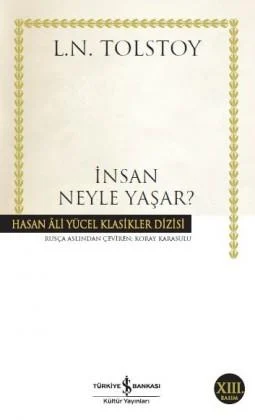
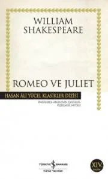
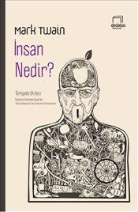

- İnsan neyle yaşar 
- Romeo ve juliet 
- İnsan Nedir 
Lev Nikolayeviç Tolstoy (1828-1910): Anna Karenina, Savaş ve Barış, Kreutzer Sonat ve Diriliş'in büyük yazarı, yaşamının son otuz yılında kendini insan, aile, din, devlet, toplum, özgürlük, boyun eğme, başkaldırma, sanat ve estetik konularında kuramsal çalışmalara verdi. Bu dönemde yazdığı öykülerde yıllarca üzerinde düşündüğü insanlık sorunlarını edebi bir kurgu içinde ele aldı. Tolstoy, insan sevgisi ve inanç konularını ustalığının bütün inceliğiyle işlerken, İnsan Neyle Yaşar? ile gerçek hayatı yansıtan tabloların içinde yeni bir ahlak anlayışını ortaya koydu.
William Shakespeare (1564-1616): Oyunları ve şiirlerinde insanlık durumlarını dile getiriş gücüyle yaklaşık 400 yıldır bütün dünya okur ve seyircilerini etkilemeyi sürdüren efsanevi yazar, Romeo ve Juliet’de birbirinden farklı pek çok toplumda benzerleriyle karşılaşılan trajik bir ilişkiyi, düşman ailelerin çocukları arasında doğan aşkı ele alır. Romeo ile Juliet’in umutsuz aşkını romantik örgüsünün yarı karanlık örtüsüyle sarmalayan eser, buna rağmen insan ilişkilerini gerçekçi bir anlayışla gözler önüne serer.
İnsan Nedir?'de Twain, bilinen öykücü tarzının dışına çıkıyor ve insanın kendi kendisini sorgulamasına yol açacak çarpıcı fikirleri sohbet havasında ortaya koyuyor.